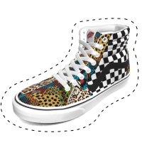

VANS CUSTOMS

SLIP - ON
새롭게 출시된 스와치를 활용해
나만의 커스텀 신발을 제작해 보세요!

더 알아보기

SK8 - HI
새롭게 출시된 스와치를 활용해
나만의 커스텀 신발을 제작해 보세요!
더 알아보기

AUTHENTIC
새롭게 출시된 스와치를 활용해
나만의 커스텀 신발을 제작해 보세요!
더 알아보기
OLD SKOOL
새롭게 출시된 스와치를 활용해
나만의 커스텀 신발을 제작해 보세요!

더 알아보기
CUSTOMS
VANS 커스텀은 1966년부터 창의적인 표현을 추구해온
VANS의 전통에서 시작됩니다.
세상에 하나뿐인 나만의 신발을 직접 디자인해보세요.
커스텀 하기